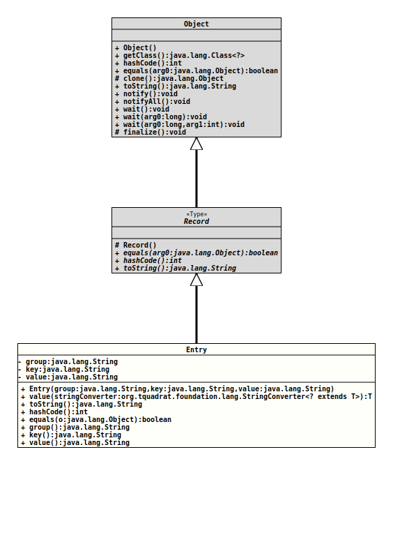

Package org.tquadrat.foundation.inifile
Record Class INIFile.Entry
java.lang.Object
java.lang.Record
org.tquadrat.foundation.inifile.INIFile.Entry
- Record Components:
group- The group for the entry.key- The key for the entry.value- The entry's value.
- All Implemented Interfaces:
Comparable<INIFile.Entry>
- Enclosing interface:
INIFile
public static record INIFile.Entry(String group, String key, String value)
extends Record
implements Comparable<INIFile.Entry>
An entry for the INI file.
- Author:
- Thomas Thrien (thomas.thrien@tquadrat.org)
- Version:
- $Id: INIFile.java 1104 2024-02-27 14:48:06Z tquadrat $
- Since:
- 0.1.0
- UML Diagram
-

UML Diagram for "org.tquadrat.foundation.inifile.INIFile.Entry"
{kind=link}
-
Field Summary
Fields -
Constructor Summary
Constructors -
Method Summary
Modifier and TypeMethodDescriptionintfinal booleanIndicates whether some other object is "equal to" this one.group()Returns the value of thegrouprecord component.final inthashCode()Returns a hash code value for this object.key()Returns the value of thekeyrecord component.final StringtoString()value()Returns the value of thevaluerecord component.final <T> Tvalue(StringConverter<? extends T> stringConverter) Retrieves the value and translates it to the desired type.
-
Field Details
-
Constructor Details
-
Method Details
-
compareTo
- Specified by:
compareToin interfaceComparable<INIFile.Entry>- Since:
- 0.4.2
-
toString
-
value
Retrieves the value and translates it to the desired type.- Type Parameters:
T- The target type.- Parameters:
stringConverter- The implementation ofStringConverterthat is used to convert the stored value into the target type.- Returns:
- The value; can be
null.
-
hashCode
Returns a hash code value for this object. The value is derived from the hash code of each of the record components. -
equals
Indicates whether some other object is "equal to" this one. The objects are equal if the other object is of the same class and if all the record components are equal. All components in this record class are compared withObjects::equals(Object,Object). -
group
Returns the value of thegrouprecord component.- Returns:
- the value of the
grouprecord component
-
key
Returns the value of thekeyrecord component.- Returns:
- the value of the
keyrecord component
-
value
Returns the value of thevaluerecord component.- Returns:
- the value of the
valuerecord component
-